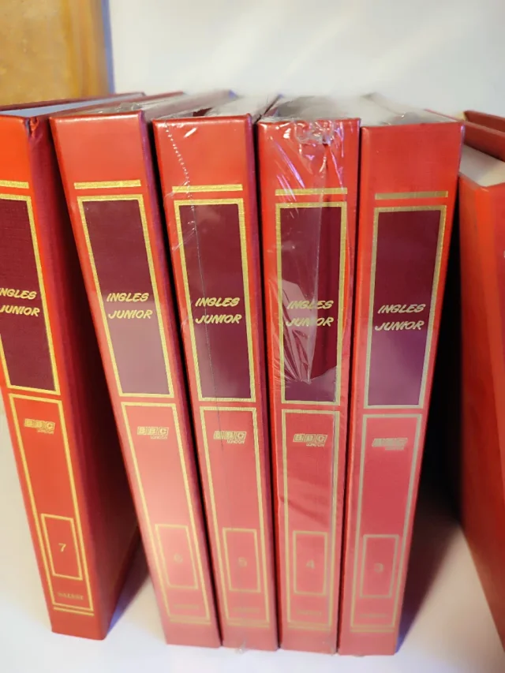
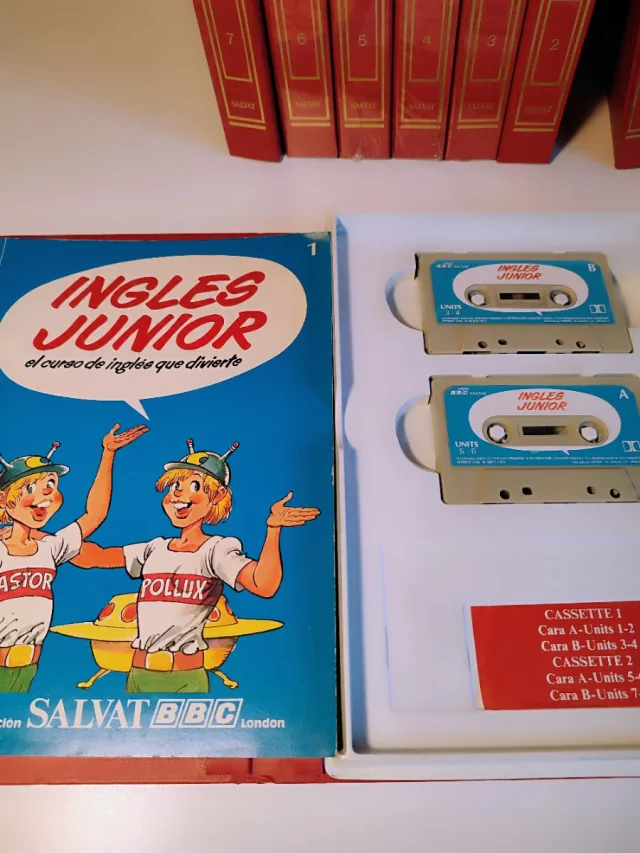

Where it all started
Growing up in Cartagena, English was something I heard in movies, in TV, in songs, and in the conversations of tourists walking through the walled city. Everything started when my Dad, brought to home a pretty and good English encyclopedia called "Inglés Junior" from BBC London (15 books with 30 cassettes to follow lessons and funny stories). This happened when I was 4 years old. I consider my father is the main arquitect of my English learning process, because he was the one who motivated me to learn English and gave me the tools to do it. Since that, for all those years, English was just a hobbie and something so far to dominate and become a challenge, a requirement — something I wanted to do, not something I had to do.


That changed when I joined SENA's technology program. For the first time, English stopped being abstract. It became directly connected to my future: the best programming documentation is in English. The best technical courses are in English. The jobs that pay the most — in my field and in others — require English.
Why this blog exists
This blog is part of my formative evidence at SENA — specifically GA4-240202501-AA1-EV03. But it is also something more personal: a record of my growth. Each post represents a topic I studied, a vocabulary set I learned, a reflection I wrote in a language that is not my mother tongue.
If you are reading this and you are also learning English, I want you to know something: it is not about being perfect. It is about being consistent. Show up every day, even if it is just one new word, one paragraph, one conversation.
A little about me
- I am studying Analysis and Software Developement Technology ADSO at SENA, Cartagena.
- I am interested in software development, data, and technology.
- I am a Systems Engineer With University of Cartagena degree.
- My hobbies include watching TV series and movies at the cinema, cycling, workout, sports, and listening to good music and reading about current events.
- I believe that language and critical thinking are inseparable.
- My favorite English phrase right now: "Progress, not perfection."
Welcome to my blog. I hope what I write here is useful, honest, and occasionally interesting. Every word here was written with effort and intention — and that, I think, is what learning looks like.